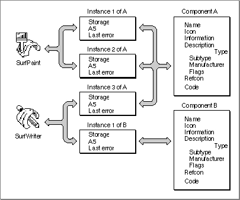

Managing Components
This section discusses the Component Manager routines that help you manage your component. It describes how to register your component and how to allow applications to connect to your component.Registering a Component
Applications must use the services of the Component Manager to find components that meet their needs. Before an application can find a component, however, that component must be registered with the Component Manager. When you register your component, the Component Manager adds the component to its list of available components.There are two mechanisms for registering a component with the Component Manager. First, during startup processing, the Component Manager searches the Extensions folder (and all of the folders within the Extensions folder) for files of type
'thng'. If the file contains all the information needed for registration (see "Creating a Component Resource" on page 6-31 for more information on creating a component file),
the Component Manager automatically registers the component stored in the file. Components registered in this manner are registered globally; that is, the component is made available to all applications and other clients.Second, your application (or another application) can register your component. When you register your component in this manner, you can specify whether the component should be made available to all applications (global registration) or only to your application (local registration). Your application can register a component that is in memory or that is stored in a resource. You use the
RegisterComponentfunction to register a component that is in memory. You use theRegisterComponentResourcefunction to register a component that is stored in a component resource. See "The Component Resource" on page 6-77 for a description of the format and content of component resources. The code in Listing 6-14 demonstrates how an application can use theRegisterComponentfunction to register a component that is in memory.Listing 6-14 Registering a component
VAR cd: ComponentDescription; draw: Component; WITH cd DO BEGIN {initialize the component description record} componentType := 'draw'; componentSubtype := 'oval'; componentManufacturer := 'appl'; componentFlags := 0; componentFlagsMask := 0; END; {register the component} draw := RegisterComponent(cd, ComponentRoutine(@OvalDrawer), 0, NIL, NIL, NIL);The code in Listing 6-14 specifies six parameters to theRegisterComponent
function. The first three are a component description record, a pointer to the component's entry point, and a value of 0 to indicate that this component should be made available only to this application. A component that is registered locally is visible only within the A5 world of the registering program. The last three parameters are specified asNILto indicate that the component doesn't have a name, an information string, or an icon. See page 6-55 for more information on theRegisterComponentfunction.When a component is registered and the
cmpWantsRegisterMessagebit is not set in thecomponentFlagsfield of the component description record, the Component Manager adds the component to its list of registered components. Whenever a client requests access to or information about a component (for example, by usingOpenDefaultComponent,FindNextComponent, orGetComponentInfo), the Component Manager searches its list of registered components.If a component's
cmpWantsRegisterMessagebit is set, the Component Manager does not automatically add your component to its list of registered components. Instead, it sends your component a series of three requests: open, register, and close. If your component returns a nonzero value as its function result in response to the register request, your component is not added to the Component Manager's list of registered components. Thus, clients are not able to connect to or get information about
your component. You might choose to set thecmpWantsRegisterMessagebit if, for example, your application requires specific hardware.Alternatively, you can let your component be automatically registered. Your component can then check for any specific hardware requirements upon receiving an open request. This lets clients attempt to connect to your component and also lets them get information about your component. However, in most cases, if your component requires specific hardware to operate, you should set the
cmpWantsRegisterMessagebit and respond to the register request appropriately.If your component controls a hardware resource, you should register your component once for each hardware resource that is available (rather than registering once and allowing multiple instances of your component). This allows clients to easily determine how many hardware resources are available by using the
FindNextComponentfunction. If you register a component multiple times, be sure that you specify a unique name for each registration.If the feature is available, you can request that the Component Manager provide automatic version control for your component (this feature is available only in version 3 and above of the manager). To request automatic version control, specify the
componentDoAutoVersionflag in the optional extension to the component resource. If you specify this flag, the Component Manager registers your component only if there is no later version available. If an older version is already registered, the Component Manager unregisters it. If a newer version of the same component is registered after yours, the Component Manager automatically unregisters your component. You can use this automatic version control feature to make sure that the most recent version of your component is registered, regardless of the number of versions that are installed.Creating a Component Resource
You can create a component resource (a resource of type'thng') in a component file. A component file is a file whose resource fork contains a component resource and other required resources for the component. If you store your component in a component file, either you can allow applications to use theRegisterComponentResourcefunction to register your component as needed, or you can automatically register your component at startup by storing your component file in the Extensions folder.A component file consists of
Listing 6-15 shows, in Rez format, a component resource that defines an oval drawing component. This drawing component does not specify optional information (see
- a component description record that specifies the characteristics of your component (its type, subtype, manufacturer, and control flags)
- the resource type and resource ID of your component's code resource
- the resource type and resource ID of your component's name string
- the resource type and resource ID of your component's information string
- the resource type and resource ID of your component's icon
- optional information about the component (its version number, additional flags, and resource ID of the component's icon family)
- the actual resources for your component's code, name, information string, and icon
Figure 6-5 on page 6-81 for the contents of the optional extension to the component resource). For compatibility with early versions of the Component Manager,
component resources should be locked.Listing 6-15 Rez input for a component resource
resource 'thng' (128, locked) { 'draw', /*component type*/ 'oval', /*component subtype*/ 'appl', /*component manufacturer*/ $00000000, /*component flags: 0*/ $00000000, /*reserved (component flags mask): 0*/ 'CODE', /*component code resource type*/ 128, /*component code resource ID*/ 'STR ', /*component name resource type*/ 128, /*component name resource ID*/ 'STR ', /*component info resource type*/ 129, /*component info resource ID*/ 'ICON', /*component icon resource type*/ 128 /*component icon resource ID*/ /*optional information (if any) goes here*/ };The component resource, and the resources that define the component's code, name, information string, and icon, must be in the same file. A component file must have the file type'thng'and reside in the Extensions folder in order to be automatically registered by the Component Manager at startup.Establishing and Managing Connections
Your component may support one or more connections at a time. In addition, a single application may have open connections with two or more different components at the same time. In fact, a single application can use more than one connection to a single component. Figure 6-2 shows two applications and two components: the first application, SurfPaint, uses two connections to component A; the second application, SurfWriter, uses one connection to component A and one to component B.Figure 6-2 Supporting multiple component connections

A component can allocate separate storage for each open connection. A component can also set the A5 world for a specific component instance and can maintain separate error information for each instance. A component can also use a reference constant value to maintain global data for the component.When an application requests that the Component Manager open a connection to your component, the Component Manager issues an open request to your component. At this time, your component should allocate any memory it needs in order to maintain a connection for the requesting application. Be sure to allocate this memory in the current heap zone rather than in the system heap. As described in "Responding to the Open Request" on page 6-18, you can use the
SetComponentInstanceStorageprocedure to associate the allocated memory with the component instance. Whenever the application requests services from your component, the Component Manager supplies you with the handle to this memory. You can also use the open request as an opportunity to restrict the number of connections your component can support.To allocate global data for your component, you can maintain a reference constant for use by your component. The Component Manager provides two routines,
SetComponentRefconandGetComponentRefcon, that allow you to work with your component's reference constant. Note that your component has one reference constant, regardless of the number of connections maintained by your component.If your component uses its reference constant and is registered globally, be aware that in certain situations the Component Manager may clone your component. This situation occurs only when the Component Manager opens a component that is registered globally and there's no available space in the system heap. In this case, the Component Manager clones your component, creating a new registration of the component in the caller's heap, and returns to the caller the component identifier of the cloned component, not the component identifier of the original registration. The reference constant of the original component is not preserved in the cloned component. Thus you need to take extra steps to set the reference constant of the cloned component to the same value as that of the original component.
To determine whether your component has been cloned, you can examine your component's A5 world using the
GetComponentInstanceA5function. If the returned value of the A5 world is nonzero, your component is cloned (only components registered globally can be cloned; if your component is registered locally it has a valid, nonzero A5 world and you don't need to check whether it's been cloned). If you determine that your component is cloned, you can retrieve the original reference constant by using theFindNextComponentfunction to iterate through all registrations of your component. You should compare the component identifier of the cloned component with the component identifier returned byFindNextComponent. Once you find a component with the same component description but a different component identifier, you've found the original component. You can then useGetComponentRefconto get the reference constant of the original component and then useSetComponentRefconto set the reference constant of the cloned component appropriately. This technique works if a component registers itself only once or registers itself multiple times but with a unique name for each registration. This technique does not work if a component registers itself multiple times using the same name.When responding to a request from an application, your component can invoke the services of other components. The Component Manager provides two techniques for calling other components. First, your component can call another component using the standard mechanisms also used by applications. The Component Manager then passes the requests to the appropriate component, and your component receives the results of those requests.
Second, your component can redirect a request to another component. For example, you might want to create two similar components that provide different levels of service to applications. Rather than completely implementing both components, you could design one to rely on the capabilities of the other. Use the
DelegateComponentCallfunction to pass a request on to another component.Listing 6-16 shows an example of delegating a request to another component. The component in this example is a drawing component that draws rectangles. The
RectangleDrawercomponent handles open, close, and setup requests. It delegates all other requests to another component. When theRectangleDrawercomponent receives an open request, it opens the component to which it will later delegate requests, and stores in its allocated storage the delegated component's component instance. It then specifies this value when it calls theDelegateComponentCallfunction.Listing 6-16 Delegating a request to another component
FUNCTION RectangleDrawer(params: ComponentParameters; storage: Handle): ComponentResult; VAR theRtn: ComponentRoutine; safe: Boolean; BEGIN safe := FALSE; CASE (params.what) OF kComponentOpenSelect: theRtn := ComponentRoutine(@RectangleOpen); kComponentCloseSelect: theRtn := ComponentRoutine(@RectangleClose); kDrawerSetupSelect: theRtn := ComponentRoutine(@RectangleSetup); OTHERWISE BEGIN safe := TRUE; IF (storage <> NIL) THEN RectangleDrawer := DelegateComponentCall (params, ComponentInstance(StorageHdl(storage)^^.delegateInstance)) ELSE RectangleDrawer := badComponentSelector; END; END; {of CASE} IF NOT safe THEN RectangleDrawer := CallComponentFunctionWithStorage(storage, params, theRtn); END;